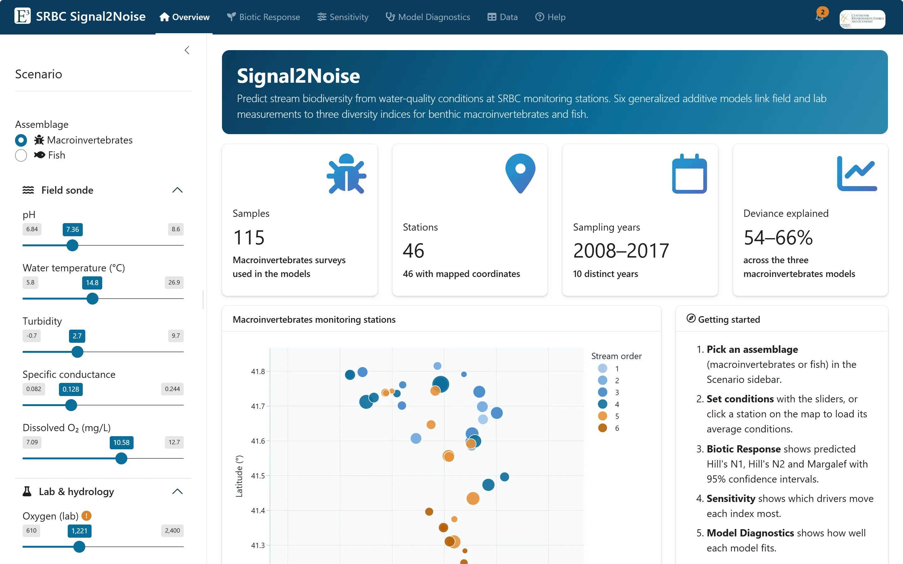
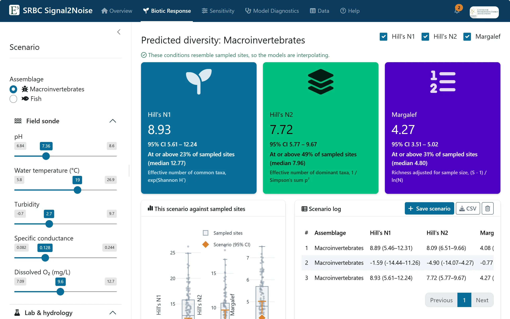
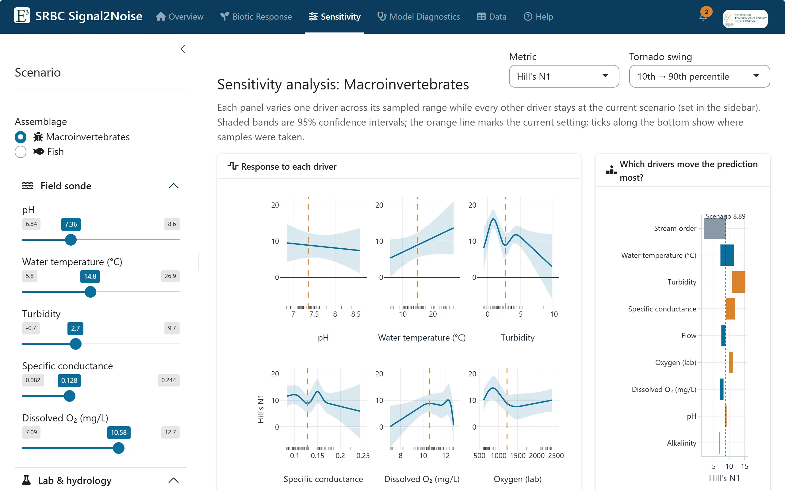
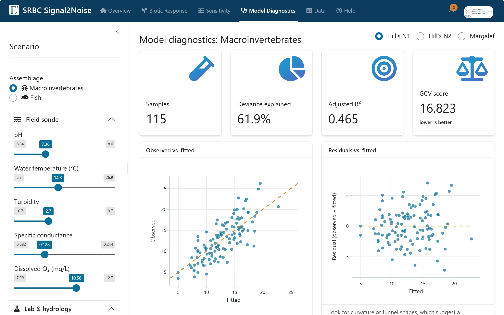
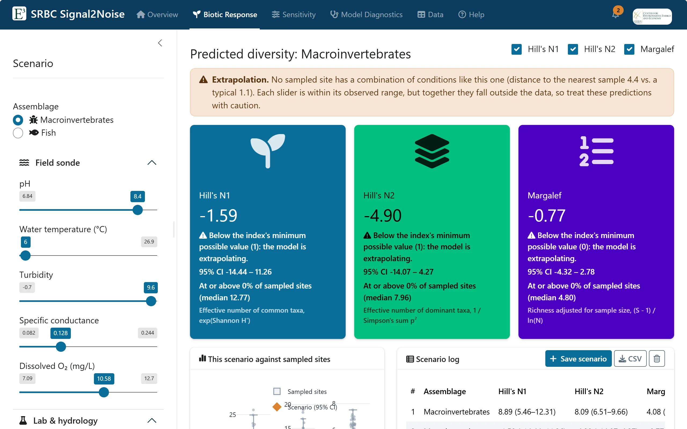

Predictions with uncertainty
Hill's N1, Hill's N2 and Margalef with 95% confidence intervals, plus where each prediction ranks among the sampled sites.
Susquehanna River Basin · 2008–2017
Signal2Noise links field-sonde and lab measurements at SRBC monitoring stations to the diversity of macroinvertebrate and fish communities. Set the conditions and see the predicted diversity, how uncertain it is, and which drivers matter most.
Runs entirely in your browser. R runs on WebAssembly (webR + Shinylive), so there is no server. The first visit downloads the R runtime and packages (up to about 100 MB) and can take about a minute to start; later visits load from your browser's cache in about 15 seconds.

What you can do
Every page shares one scenario: pick an assemblage, move the water-quality sliders or click a station on the map, and the predictions, plots and diagnostics update together.
Hill's N1, Hill's N2 and Margalef with 95% confidence intervals, plus where each prediction ranks among the sampled sites.
Flags combinations of conditions that no sampled site resembles, and predictions that fall below an index's possible minimum.
Response curves for every driver and a tornado chart that ranks which ones move each index the most.
Click a monitoring station on the map to load its average conditions into the scenario, then adjust from there.
Deviance explained, adjusted R², GCV, smooth-term tests, and observed-vs-fitted and residual plots for all six models.
Save what-if scenarios side by side and download them as CSV, or filter and download the modeling data itself.
Each index gets its own card with the predicted value, a 95% confidence interval and how it compares with the sites that were actually sampled.

Each panel varies one driver across its sampled range while every other driver stays at the current scenario.

Fit statistics and residual plots for every assemblage and index, with the smooth-term tests and the exact model formula.

The models
One model per assemblage and index. Smooth terms let each water-quality driver have a curved, data-driven effect instead of a straight line.
exp(H′)The effective number of common taxa: the exponential of Shannon diversity.
1 / Σ p²The effective number of dominant taxa: the inverse of Simpson's concentration.
(S − 1) / ln NSpecies richness adjusted for the number of individuals counted.
| Assemblage | Index | Samples | Deviance explained | Adj. R² |
|---|---|---|---|---|
| Macroinvertebrates | Hill's N1 | 115 | 61.9% | 0.47 |
| Hill's N2 | 115 | 54.2% | 0.38 | |
| Margalef | 115 | 65.9% | 0.51 | |
| Fish | Hill's N1 | 50 | 73.8% | 0.60 |
| Hill's N2 | 50 | 72.4% | 0.58 | |
| Margalef | 50 | 74.9% | 0.62 |
Fitted with mgcv 1.9. Fish basis sizes were chosen by a GCV grid search over 279,936 combinations; macroinvertebrate models mix standard and adaptive smooths and add stream order as a factor.
pH, water temperature, turbidity, specific conductance, dissolved oxygen
Oxygen, flow, alkalinity (macroinvertebrates only), and stream order (macroinvertebrates only)
Data notes
The app is open about its limits, and so is this page.
The models describe how diversity varied with conditions in 2008–2017 monitoring data. They do not show what would happen if a condition were changed.
As in the 2019 analysis, missing measurements were replaced with column means. Flow was missing for 52 of 115 macroinvertebrate and 34 of 50 fish samples. The Data page flags every filled value.
Lab oxygen, flow and alkalinity hold values of about 400–2,400, which look like spreadsheet codes rather than measurements. The app treats those sliders as relative indices.
Outside the sampled conditions, predictions can be impossible, even negative. The app warns you when that happens.

Run it yourself
The browser version is the full app. Running it in R is faster to start and lets you change the models.
git clone https://github.com/melhzy/Signal2Noise.git cd Signal2Noise
install.packages(c("shiny", "bslib", "plotly", "DT", "mgcv"))
shiny::runApp()
The fitted models are cached, so startup takes about two seconds.
# needs install.packages("shinylive")
Rscript scripts/build_site.R
Compiles the app for the browser and writes the site to _site/.
Pick an assemblage, click a station, and see how sensitive its diversity is to temperature, conductance and oxygen.